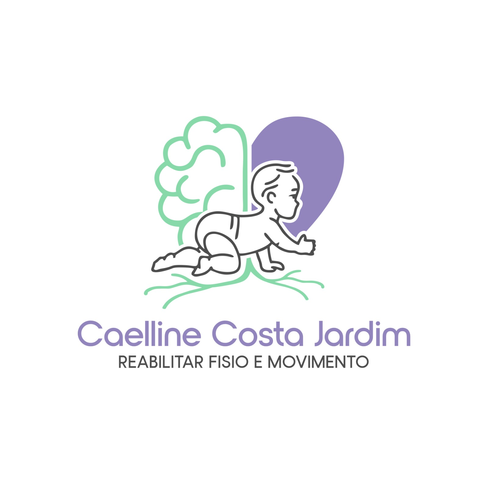
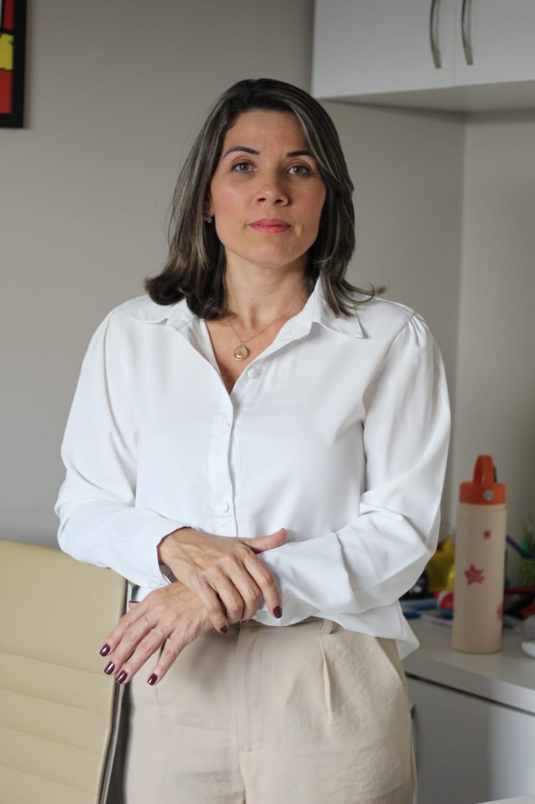

DESENVOLVIMENTO • AUTONOMIA • CONQUISTA
FisioterapeutaNeurofuncional Pediátrica

Formações e Capacitações
- Reabilitação em Neuropediatria
- Transtornos do Neurodesenvolvimento
- Therapy Taping — Formação Básica e Avançada
- PediaSuit — Formação Básica e Terapia Intensiva com Gaiola de Habilidades
Metodologias e abordagem
- DIR/Floortime
Atuação
- Estimulação Precoce
- Atrasos do desenvolvimento neuropsicomotor
- Transtorno do Espectro Autista (TEA)
- Síndrome de Down (Trissomia 21)
- Síndromes Neurológicas
Localização
Minaçu – GO